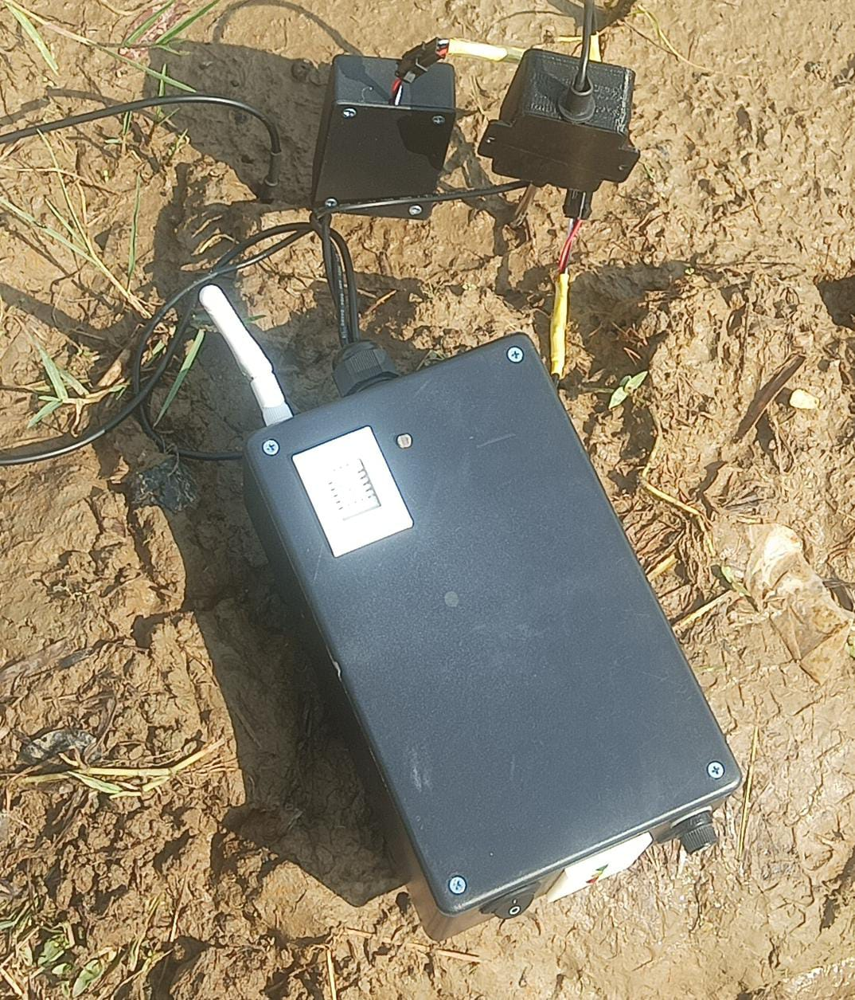

Tentang
Instruksi Penggunaan Alat
-
Tancapkan sensor-sensor ke dalam tanah seperti contoh di bawah:
 -
Tekan tombol power pada alat untuk menghidupkan alat:

- Tunggu 5 detik hingga indikator baterai hidup.
- Buka aplikasi pada smartphone.
-
Tekan tombol mulai untuk melihat hasil:
- Hasil akan tampil.
FUNGSI APLIKASI
Apliakasi di buat untuk dapat memantau dan melihat kualitas tanah serata dapat memberikan rekomendasi tanaman yang dapat di tanam di tanah / lahan tersebut
PERANCANG
Saya Gofar Chairulloh Annam Mahasiswa Politeknik Negeri Jakarta. Dalam pembuatan tugas akhir ini saya merancang aplikasi Sistem pemantauan tanah.
Saya Alviyan Syafriansyah Matondang Mahasiswa Politeknik Negeri Jakarta. Dalam pembuatan tugas akhir ini saya merancang alat Sistem pemantauan tanah.